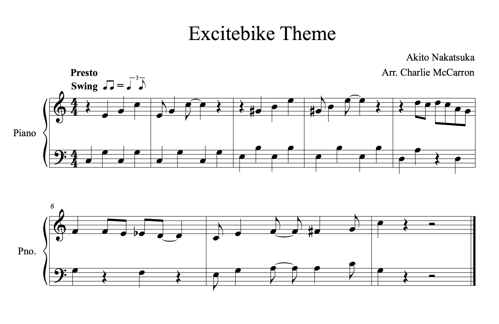
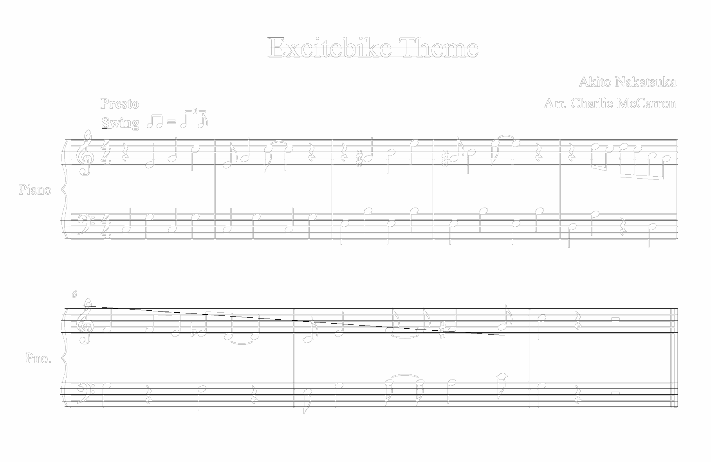
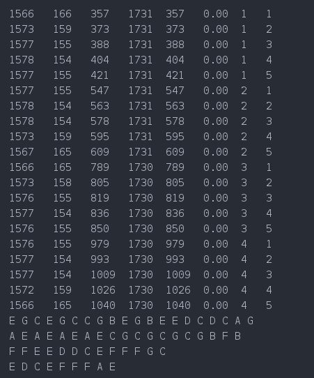

1) The key signature is C
2) Every note has the same rhythm.
3) No sharps or flats
4) All notes are within 1 ledger of the staff
5) Treble Clef
Step 1) Find lines using hough transform
Step 2) Filter lines by length and angle to determine staff lines
Step 3) Find a set of 5 lines that comprise a staff by looking at the gap between the lines
Step 4) Scan each staff using a window to find notes and their corresponding position in the staff.
Step 5) Label the notes and print out their pitch!
Since this uses hough transform, users enter these parameters into the command line,
./ sigma lo hi nBlur mincnt avgthresh in.png out.png
avgthresh is specific to our program, and determines the average darkness of the scan window at which we will consider something a note.


length startx starty endx endy slope staff# staffline

References: Professor Scharstein and "Computer Vision" by Shapiro and Stockman